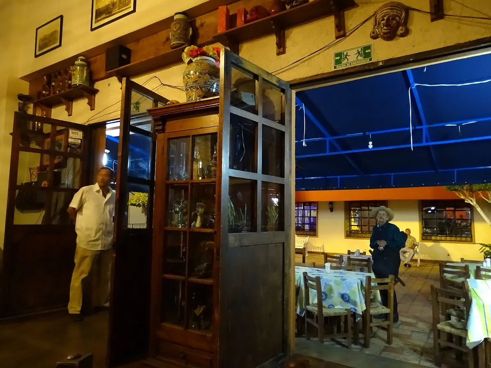

12 formas de usar tarjetas NFC en restaurantes, cafeterías y bares
12 ideas para usar tarjetas NFC en restaurantes, cafeterías y bares: reseñas en Google, Wi‑Fi, delivery y redes, con consejos de colocación.

En resumen
- El mejor momento para pedir una reseña en un restaurante es al llevar la cuenta.
- Usa una tarjeta por objetivo: reseñas en la mesa, Wi‑Fi en la entrada y delivery en la bolsa para llevar.
- Coloca las tarjetas a la vista y con una frase clara: «Acerca tu celular y califícanos».
- Mide los resultados: cuenta tus reseñas cada semana antes y después de colocar las tarjetas.
Contenido del artículo
Un restaurante vive de la recomendación: de la reseña que un cliente lee antes de elegir dónde comer, de la foto que alguien sube a Instagram y del pedido que hace desde casa porque ya te conoce. Las tarjetas NFC con código QR conectan cada uno de esos momentos con un solo toque.
Aquí tienes 12 ideas prácticas para usarlas en restaurantes, cafeterías, taquerías, bares y food trucks, y consejos para colocarlas donde de verdad funcionan.

Ideas para conseguir más reseñas
1. En la carpeta de la cuenta
Es el momento perfecto: el cliente terminó de comer, está satisfecho y espera unos minutos con el celular en la mano. Coloca una tarjeta de reseñas de Google dentro de la carpeta o sobre la charola de la cuenta con una frase clara: «¿Te gustó? Acerca tu celular y cuéntanos».
2. En la caja o el mostrador
En taquerías, cafeterías y negocios de comida rápida, donde no hay cuenta en la mesa, la caja es el punto de contacto. Que tu cajero la mencione al entregar el cambio: «Si te gustó, nos ayudas con una reseña aquí».
3. En destinos turísticos, también TripAdvisor
Si estás en Cancún, Oaxaca, San Miguel de Allende o cualquier zona turística, muchos visitantes extranjeros eligen dónde comer por TripAdvisor. Una tarjeta para TripAdvisor junto a la de Google cubre a ambos públicos.
4. En la mesa, con un portatarjetas
Un pequeño portatarjetas de acrílico junto al servilletero mantiene la tarjeta visible durante toda la comida. Funciona especialmente bien en cafeterías donde la gente se queda a trabajar.
Recuerda las reglas: pide reseñas a todos tus clientes y sin ofrecer nada a cambio (un postre, un descuento). Google lo prohíbe, como explicamos en reseñas falsas y políticas de Google.
Ideas para mejorar la experiencia
5. Wi‑Fi sin dictar la contraseña
Pocas cosas interrumpen tanto a un mesero como dictar «la contraseña es CafeLaEsquina2024, con C mayúscula». Una tarjeta NFC de Wi‑Fi en la entrada o en cada mesa conecta al cliente con un toque. Te contamos todas las opciones en cómo compartir el Wi‑Fi con tus clientes.
6. Menú digital actualizado
Si ya tienes tu menú en línea (en tu sitio web o en un PDF), una tarjeta o un QR en la mesa lo abre al instante. Ideal para cambios de precio o platillos de temporada sin reimprimir cartas.
7. Llamar al mesero o pedir la cuenta por WhatsApp
En terrazas grandes o rooftops, una tarjeta de WhatsApp permite que el cliente escriba para pedir otra ronda o la cuenta. También sirve para reservaciones y pedidos para eventos.
Ideas para vender más
8. En las bolsas para llevar: pedidos a domicilio
El cliente que ya probó tu comida es el que más probabilidades tiene de volver a pedir. Incluye una tarjeta o un QR que abra tu tienda en Uber Eats o Rappi para que la próxima vez te encuentre en segundos.
9. Instagram para que te sigan desde la mesa
Tus platillos son tu mejor contenido. Una tarjeta de Instagram en la mesa invita a seguirte justo cuando el cliente está tomando fotos. Más ideas en nuestra guía de Instagram para negocios locales.
10. Playlist del restaurante en Spotify
«¿Qué canción es esta?» es una pregunta frecuente en bares y cafeterías. Una tarjeta de Spotify con la playlist de tu local crea una conexión con tu marca que dura más allá de la visita.
11. En eventos y ferias gastronómicas
En una feria pasan cientos de personas por tu stand. Una tarjeta en el mostrador convierte a esos curiosos en seguidores o en clientes de delivery.
12. En la pared del baño o la salida
Puede sonar raro, pero son lugares donde el cliente tiene unos segundos libres. Un letrero con la tarjeta de reseñas o de Instagram aprovecha ese momento.
Consejos de colocación que hacen la diferencia
- Una tarjeta, un objetivo: no confundas al cliente; cada tarjeta abre una sola cosa.
- Frase de acción visible: «Acerca tu celular y califícanos» funciona mejor que un logo solo.
- A la altura de la mano: la tarjeta debe poder tocarse sin estirarse.
- Lejos de superficies metálicas: el metal puede interferir con la lectura NFC; usa una base de madera, acrílico o plástico.
- Revisa de vez en cuando: prueba que la tarjeta siga funcionando y que nadie haya pegado un QR ajeno encima.
¿Cuántas tarjetas necesita un restaurante?
| Tipo de negocio | Sugerencia |
|---|---|
| Food truck o puesto | 1 o 2 tarjetas de reseñas en el mostrador |
| Cafetería o taquería | 2 de reseñas (caja y barra) + 1 de Wi‑Fi o Instagram |
| Restaurante de 10 a 20 mesas | 5 a 10 de reseñas (carpetas de cuenta) + 1 o 2 de Wi‑Fi |
| Restaurante con delivery | Lo anterior + tarjetas o QR de Uber Eats o Rappi en las bolsas |
Por eso nuestros paquetes de 5 y 10 tarjetas son los más elegidos por restaurantes: el precio por tarjeta baja hasta $200 MXN.
Cómo medir si funciona
Antes de colocar las tarjetas, anota cuántas reseñas tienes en Google. Después revisa el número cada semana durante un mes. También puedes preguntarle a tu equipo cuántas veces al día un cliente usa la tarjeta. Si un lugar no funciona, muévela a otro.
Conclusión
Un restaurante tiene decenas de momentos de contacto con sus clientes. Las tarjetas NFC convierten los mejores de esos momentos en reseñas, seguidores y pedidos, sin apps y sin interrumpir el servicio. Empieza por la cuenta y la caja; los resultados te dirán dónde poner la siguiente.
Preguntas frecuentes
¿Dónde colocar la tarjeta de reseñas en un restaurante?
En la carpeta o charola de la cuenta, en la caja y en un portatarjetas sobre la mesa. El objetivo es que el cliente la vea justo cuando terminó de disfrutar su comida.
¿Cuántas tarjetas necesita un restaurante?
Depende del tamaño. Una referencia práctica es una por caja, una por cada carpeta de cuenta y algunas extra para las mesas con más rotación. Los paquetes de 5 y 10 tarjetas suelen ser los más usados.
¿Puedo poner el Wi‑Fi y las reseñas en la misma tarjeta?
Cada tarjeta abre un solo enlace, por eso conviene una tarjeta para cada objetivo. Así el mensaje es claro y el cliente sabe exactamente qué pasará al acercar su celular.
Fuentes y referencias
- Consejos para obtener más reseñas de Google — Ayuda de Perfil de Empresa de Google
- Contenido prohibido y restringido — Políticas de contenido aportado por usuarios de Google Maps
- Local Consumer Review Survey 2026 — BrightLocal
- Barcode Contents: Wi-Fi Network config — ZXing (proyecto de código abierto)
Las marcas mencionadas pertenecen a sus respectivos dueños. Las imágenes provienen de Wikimedia Commons y se usan según su licencia libre, indicada en cada pie de foto.

Diseñamos y programamos tarjetas NFC con código QR para negocios de todo México. Escribimos estas guías con base en la documentación oficial de Google, Apple y Android y en lo que aprendemos todos los días con nuestros clientes.
Contáctanos · Cómo funcionan nuestras tarjetas